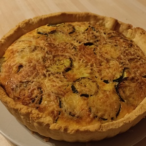

-
Quiche courgettes chèvre
Ingrédients
- 1 pâte brisée
- 100g de chèvre
- 50g de gruyère râpé
- 1 courgette
- 15cl de crème liquide
- 3 oeufs
- 2 cuillères à soupe d'huile d'olive
- 2 pincées d'herbes de Provence
- 1 pincée de sel
- 1 pincée de poivre
Préparation
- - Pour la pâte, rendez-vous sur la page "Les bases culinaires" !
- - Mettre la pâte dans un moule à tarte
- - Piquer le fond avec une fourchette
- - Laver les courgettes et les couper en rondelles très fines
- - Faire chauffer l'huile d'olive dans une poêle
- - Ajouter les courgettes, les herbes de Provence, le sel et le poivre
- - Faire revenir à feu moyen pendant 8 minutes en remuant souvent
- - Couper le chèvre en petits morceaux
- - Casser les oeufs dans un saladier
- - Ajouter la crème, du sel et du poivre
- - Mélanger avec une fourchette
- - Ajouter le chèvre et mélanger
- - Verser le mélange dans le fond de tarte
- - Ajouter les courgettes
- - Parsemer de gruyère râpé
- - Faire cuire à 200°C pendant 30 minutes environ
-
Pizza

Ingrédients
- 1 pot de sauce provençale ou bolognaise
ou crème fraîche - Gruyère râpé
- Jambon cru
- Chèvre ou mozzarella
Préparation
- - Pour la pâte, rendez-vous sur la page "Les bases culinaires" !
- - Fleurer le plan de travail et étaler la pâte dessus
- - Étaler la sauce ou la crème sur la pâte
- - Mettre le chèvre (et/ou la mozzarella)
- - Mettre le gruyère puis le jambon cru
- - Ne pas oublier de faire les croûtes !
- 1 pot de sauce provençale ou bolognaise
-
Gnocchis di patate

Ingrédients pour 4 personnes
- 1kg de pommes de terre rouges
- 1 oeuf
- 300g de farine
- 2 pincées de sel
Préparation
- - Faire cuire les pommes de terre dans l'eau bouillante pendant 40 minutes
- - Mettre la farine sur le plan de travail et faire un puits
- - Presser les pommes de terre encore chaudes au centre du puits
- - Ajouter l'oeuf légèrement battu
- - Mélanger avec les mains jusqu'à obtenir une pâte molle et compacte
- - Ne pas trop pétrir la pâte
- - Couper un morceau de pâte et le rouler pour en faire un boudin
- - Couper des petits morceaux d'environ 2cm d'épaisseur
- - Façonner les gnocchis avec la planche à gnocchis ou une fourchette
- (en appuyant légèrement avec le pouce, faire glisser le gnocchi)
- - Déposer les gnocchis sur une planche en les espaçant
- - Pour la cuisson : mettre les gnocchis dans l'eau bouillante
- - Dès qu'ils remontent, ils sont cuits !
- - Faire griller les gnocchis dans une poêle avec un peu d'huile d'olive
-
Onigiris

Ingrédients (nombre portions à déterminer)
- Riz japonais (quantité à déterminer)
- Feuilles d'algue nori
- Thon émietté (quantité à déterminer)
Préparation
- - Faire cuire le riz à la japonaise
- - Une fois le riz cuit, l'étaler sur une assiette pour qu'il tiédisse
- - Prendre une petite quantité de riz
- - Commencer à former une boule
- - Mettre du thon au centre
- - Façonner l'onigiri en sorte de montagne
- - Couper un rectangle de feuille de nori
- - L'humidifier et entourer partiellement l'onigiri par le dessous
-
Crocchette di patate

Ingrédients (nombre portions à déterminer)
- 1kg de pommes de terre rouges
- 100g de Grana Padano
- 1 pincée de poivre
- Emmental ou un fromage fondant de votre choix
- 1 pincée de noix de muscade
- 2 jaunes d'oeuf
- 1 pincée de sel
Ingrédients pour la chapelure et la cuisson
- 2 oeufs
- Chapelure
- Herbes de Provence
- Huile de friture (type Isio 4)
Préparation
- - Faire cuire les pommes de terre dans l'eau bouillante pendant 40 minutes
- - Mettre la chapelure et les herbes de Provence dans un plat
- - Couper l'emmental (ou le fromage) en petits bâtonnets
- - Presser les pommes de terre encore chaudes
- - Ajouter le parmesan, les jaunes d'oeuf, le sel et la muscade
- - Mélanger le tout
- - Prendre une petite portion de pâte et l'applatir
- - Placer un morceau de fromage au centre
- - Refermer le tout en formant une croquette
- - Bien refermer pour que l'huile ne rentre pas pendant la cuisson
- - Battre les 2 oeufs dans un bol
- - Tremper une croquette dedans puis la paner
- - Paner toutes les croquettes
- - Faire chauffer l'huile dans une poêle jusqu'à 170°C
- - Faire cuire 3 croquettes à la fois
- - Une fois cuites, bien les égoutter
- - Mettre les croquettes dans une assiette recouverte d'essui-tout